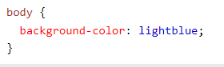
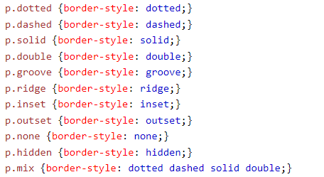
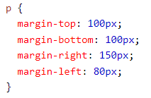
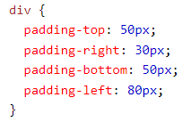
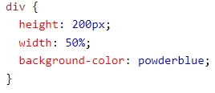

CSS (siglas en inglés de Cascading Style Sheets), en español «Hojas de estilo en cascada», es un lenguaje de diseño gráfico para definir y crear la presentación de un documento estructurado escrito en un lenguaje de marcado. Es muy usado para establecer el diseño visual de los documentos web, e interfaces de usuario escritas en HTML o XHTML; el lenguaje puede ser aplicado a cualquier documento XML, incluyendo XHTML, SVG, XUL, RSS, etcétera. Junto con HTML y JavaScript, CSS es una tecnología usada por muchos sitios web para crear páginas visualmente atractivas, interfaces de usuario para aplicaciones web y GUIs para muchas aplicaciones móviles (como Firefox OS).
Las hojas de estilos aparecieron poco después que el lenguaje de etiquetas SGML, alrededor del año 1970. Desde la creación de SGML, se observó la necesidad de definir un mecanismo que permitiera aplicar de forma consistente diferentes estilos a los documentos electrónicos.
El gran impulso de los lenguajes de hojas de estilos se produjo con el boom de Internet y el crecimiento exponencial del lenguaje HTML para la creación de documentos electrónicos. La guerra de navegadores y la falta de un estándar para la definición de los estilos dificultaban la creación de documentos con la misma apariencia en diferentes navegadores.
El color de fondo de una página puede ser algo como esto:

El código CSS de esto es:

Un ejemplo de ello puede ser:

Un ejemplo de parrafo:

Las propiedades CSS height y las width se utilizan para establecer la altura y el ancho de un elemento.
La propiedad CSS max-width se utiliza para establecer el ancho máximo de un elemento.
Ejemplo:
